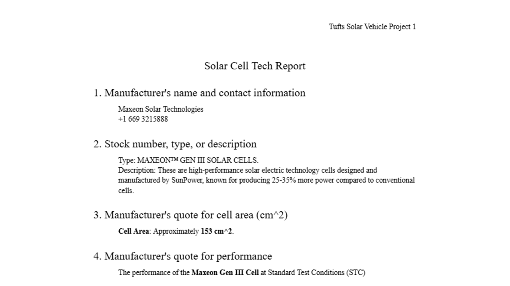
Technical Report
B.S. Electrical Engineering @ Tufts
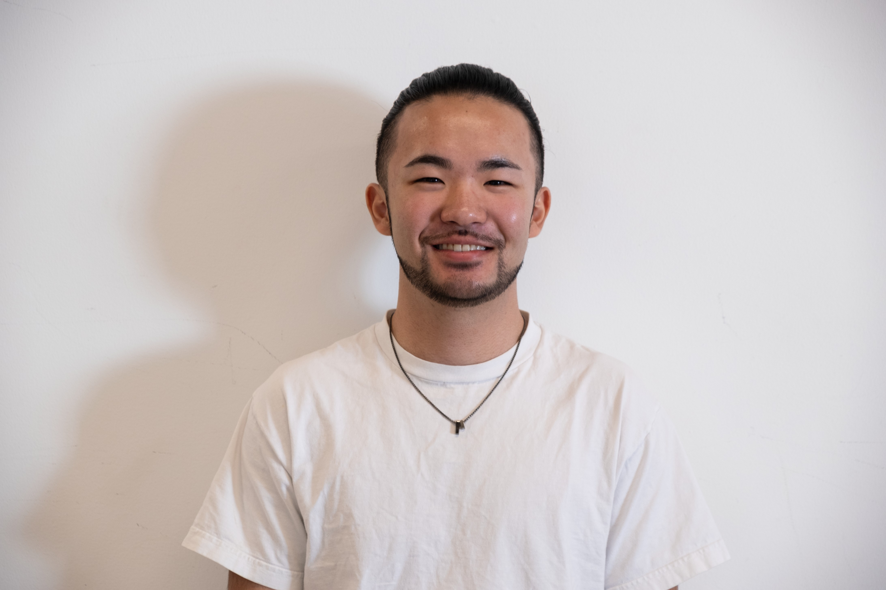
Skills
Work
Leadership
Education
I turn ambition into results. I moved to Canada at 13 without speaking English, started in a 1st-grade ELL class, and worked my way into Tufts Engineering. As a sophomore transfer, I joined the Tufts Solar Vehicle Project and helped grow it from eight students into a fully functioning engineering team. By reaching out to experts and building efficient systems, I completed the entire solar array manufacturing process in six months at just 0.5% of the usual cost.
As President of the Tufts Solar Vehicle Project, I lead a 130+ person multidisciplinary team. I focus on collaboration, clarity, and using people’s strengths. Across Mechanical, Electrical, and Business teams, I encourage learning, experimentation, and shared ownership. Together we are building Tufts’ first road-legal, race-competitive solar car.
My work spans bioelectrical sensing, solar manufacturing, and product development. At Tufts NanoLab, I developed triboelectric nanogenerator-based sensing solutions. At Recruit Holdings, I led the only MVP selected for development, managing cross-functional teams and conducting 100+ customer interviews. I bring experience in agile development, lamination, C, FPGA design, VHDL, and circuit design, always with a focus on building solutions that are practical, sustainable, and business-ready.
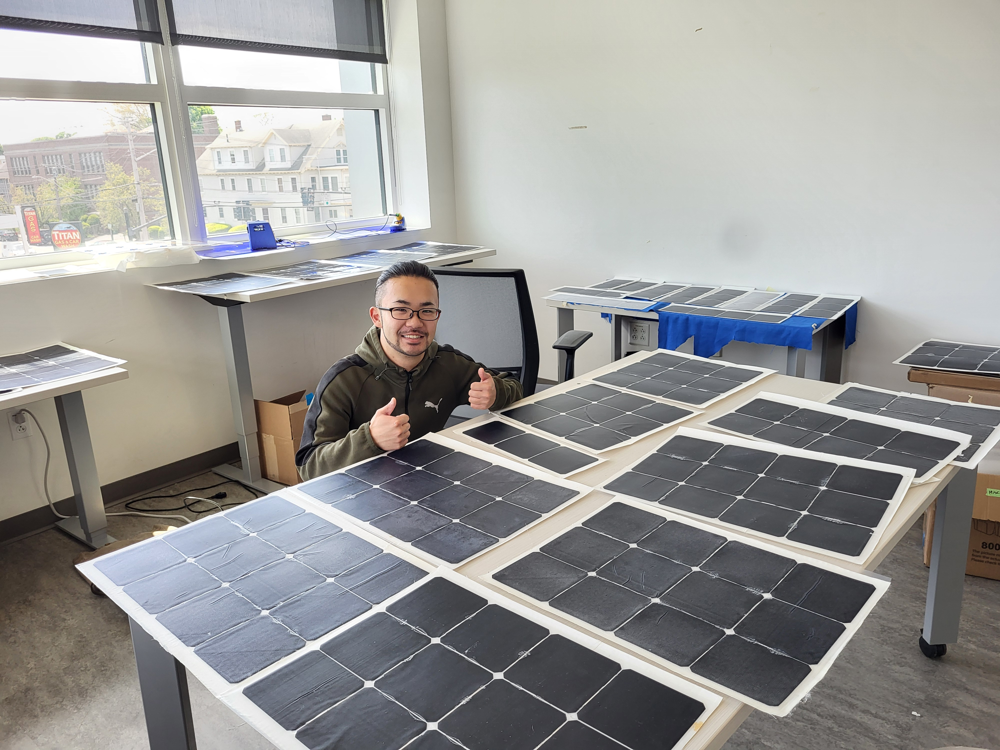
Impact
Workshops
As co-Electrical Lead of the Tufts Solar Vehicle Project (TSVP), I led a team of 4 to develop a machine that streamlined the production of solar panels, which were essential for powering our solar vehicle. By building our own testing equipment and workspace, we reduced costs by 99.95% and completed the project in just four months. Our team produced high-quality solar panels to maximize the vehicle’s performance, all while staying within a limited budget and spending only an additional $376 beyond sponsored materials.

Technical Report
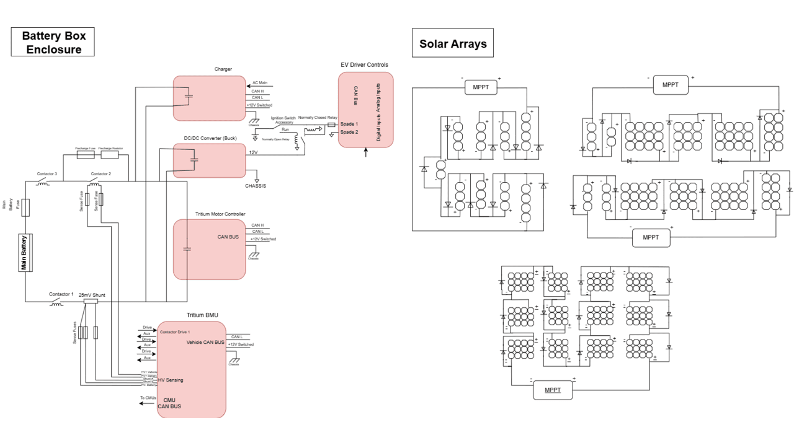
Electrical System
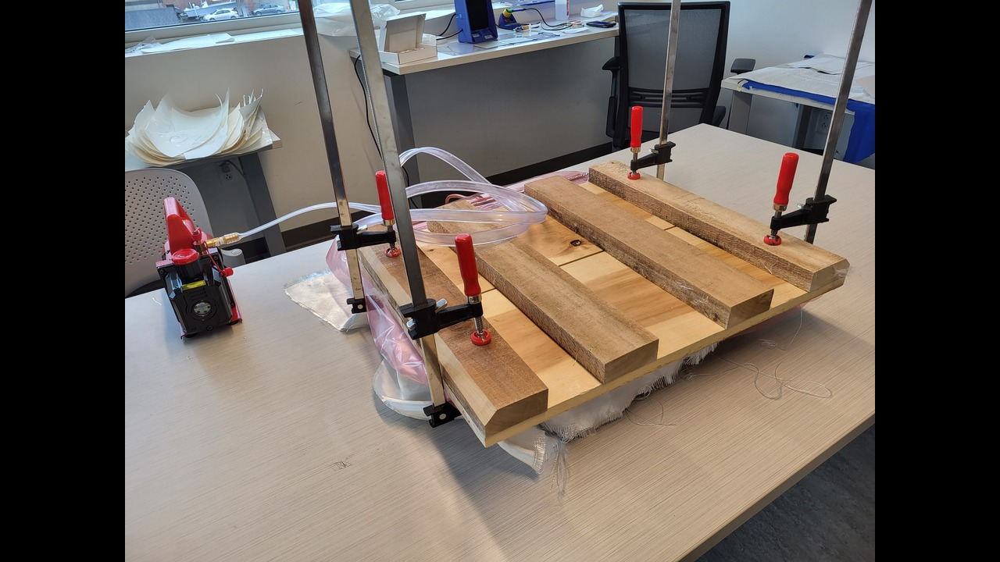
Lamination Machine
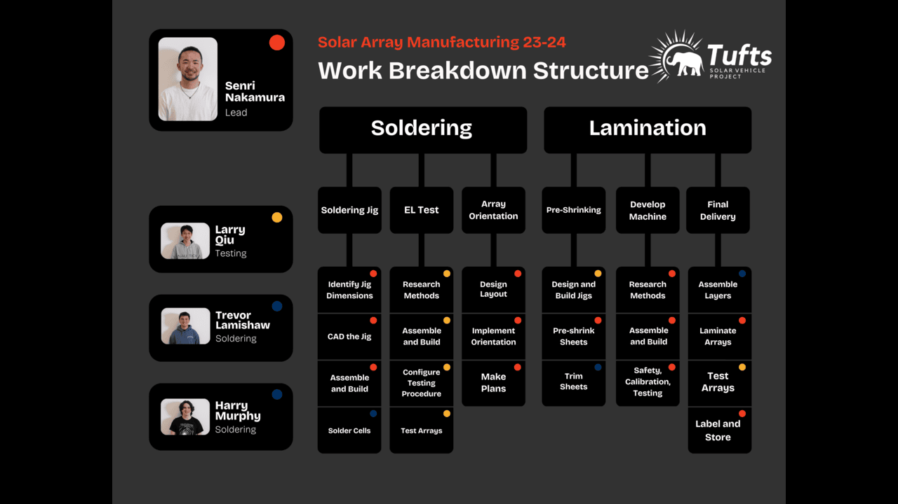
Project Structure
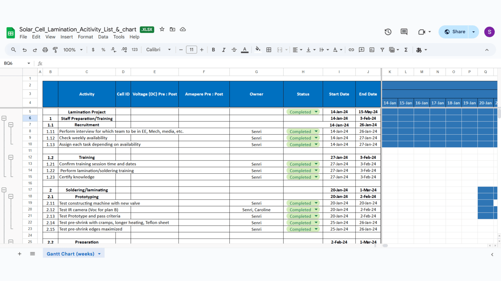
Gantt Chart
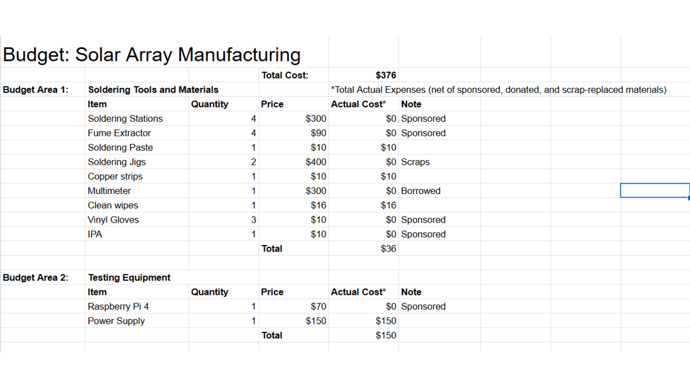
Itemized Budget
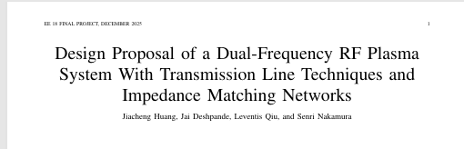
Designed a dual-frequency RF plasma system operating at 13.56 MHz and 2.45 GHz, capable of supporting oxygen and argon plasma loads whose impedances vary with gas type and operating power. Implemented and analyzed double-stub transmission-line matching and compact LC matching alternatives using Smith chart. Completed as a final project for Electromagnetic Fields and Waves W/lab.
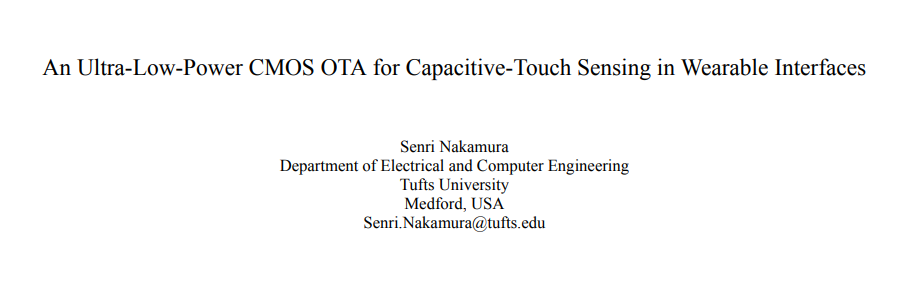
Designed an ultra-low-power CMOS operational transconductance amplifier (OTA) for capacitive-touch sensing in wearable interfaces. Implemented in XFAB 180nm CMOS, achieving 57 dB DC gain, ~20 MHz GBW, and 180 µW power. Signed an NDA with XFAB, so confidential process details cannot be disclosed. Completed as a final project for EE147 – Analog & Mixed Signal CMOS Design.
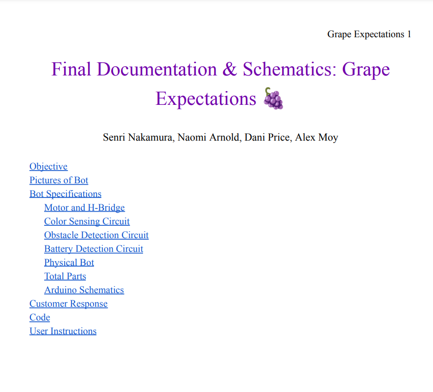
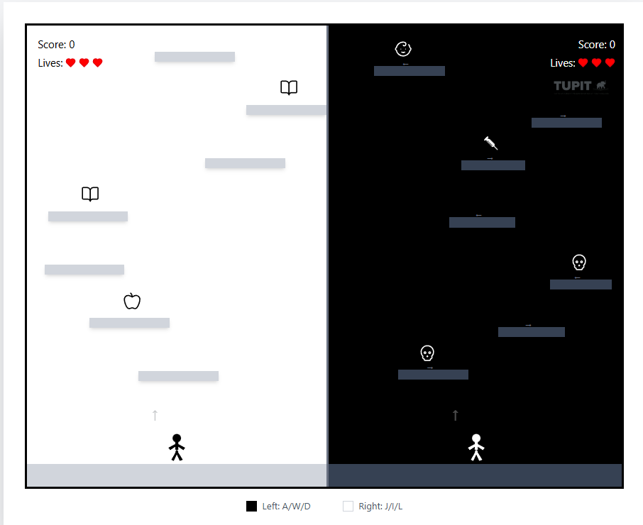
Built an interactive web-based game as a final project for *Revolutionary Rhymes: Tupac Shakur and the Study of Society* (Ex-College, Prof. Deion M. Owens, AM). The game explores structural inequality, carceral systems, and pathways for transformation through course theory, ethnographic interviews with TUPIT educators, and messages drawn from Tupac Shakur’s music. Developed in React, TypeScript, and Vite with custom SVG assets, dynamic platform generation, and responsive game physics.
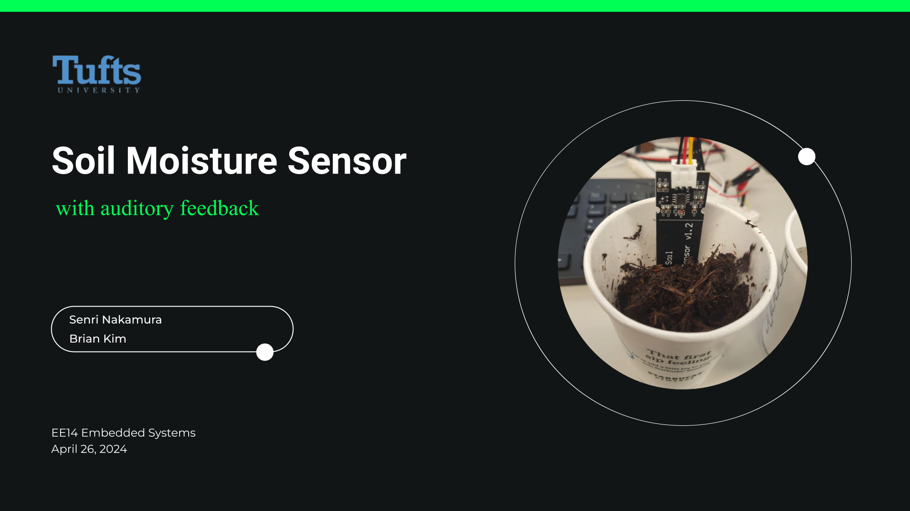
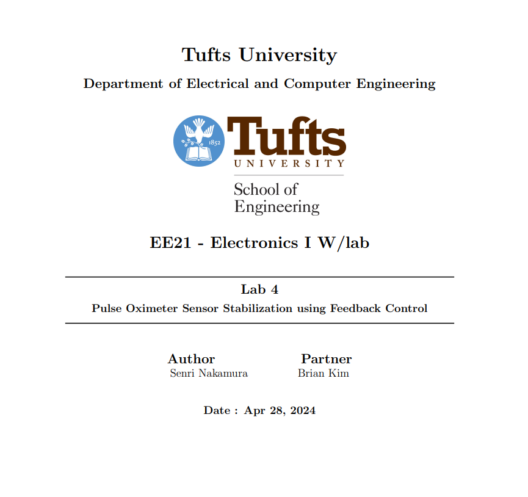